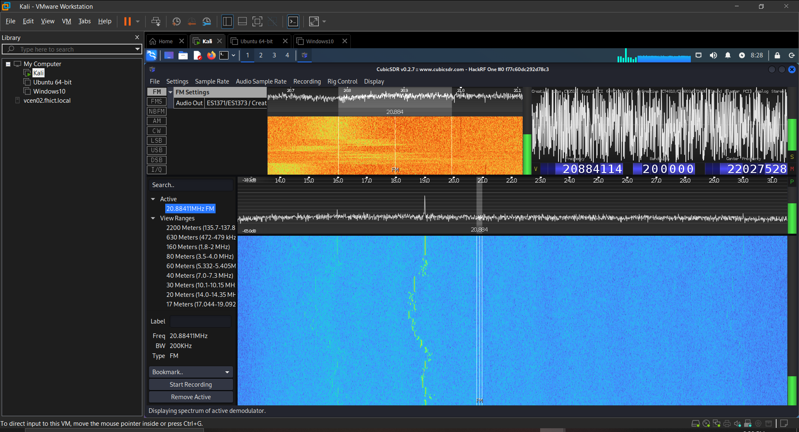

Tactic: Intel Gathering
Technique: Scan Radio Frequencies
It's possible to scan for the radio frequencies that are being emitted from robot's. These Radio Frequencies can
be analyzed and the results of these analyses can be used for jamming, or controlling the robot.
Technique in practice
Video: Demo of radio frequency scanning with a Hackrf
One
Video: Demo of radio frequency scanning and capturing with
a FlipperZero
Mitigations
Radio frequency scanning itself cannot be mitigated. What can be mitigated, however, is the risk of sensitive information leaking through this technique by limiting and securing the critical data sent over radio signals. Developers of the robots should make careful considerations concerning the volume and type of information that is being broadcasted, as wel as applying proper encryption techniques on the data itself.
Detections
Detecting the scanning of radio frequencies is nigh impossible. If the proper mitigations are applied, however, detecting radio frequency scanning is not productive or useful to a blue teamer.
Documented incidents
Radio frequency scanning is applied on the Clearpath Jackal robot during a pentest. As can be seen in the image below, the radio communication between the robot and the controller were intercepted, and can be analyzed.
